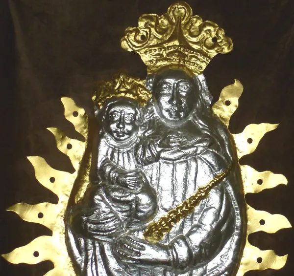
Kopia Madonny Apokaliptycznej (Immaculaty)
Żagań, kościół WNMP, 2017
Repusowana blacha miedziana, srebrzona i złocona, osadzona na gotyckim szczycie zachodnim.
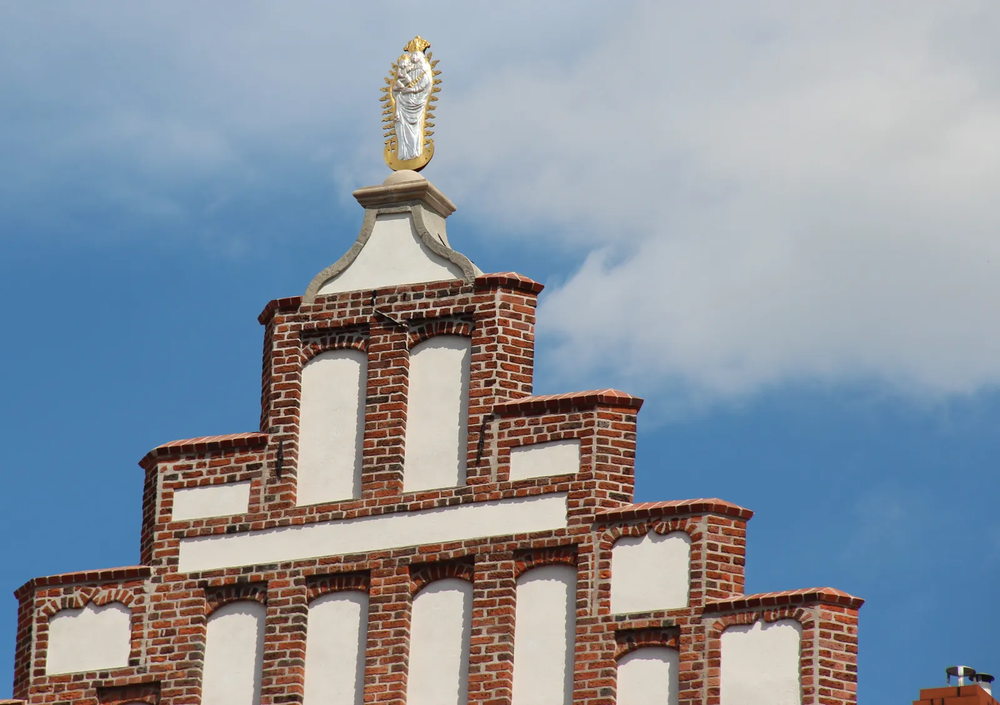
Konserwacja i restauracja malarstwa, rzeźby kamiennej, ceramiki i zabytków metalowych. Ekspertyzy, projekty i nadzory konserwatorskie.
Zobacz realizacjeKopia Madonny Apokaliptycznej na szczycie kościoła WNMP w Żaganiu, 2017
Konserwacja zaczyna się od odkrywki: małego okienka, w którym spod brudu, przemalowań i dawnych napraw widać pierwotną warstwę. Z niego wynika cały program prac. Poniżej kilka obiektów przed konserwacją i po niej.
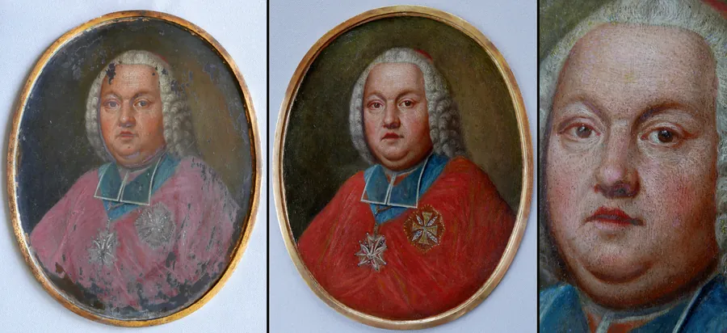
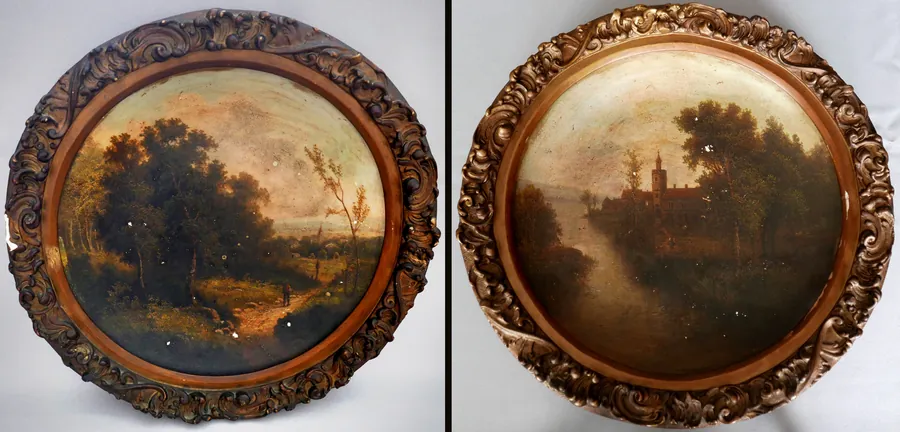
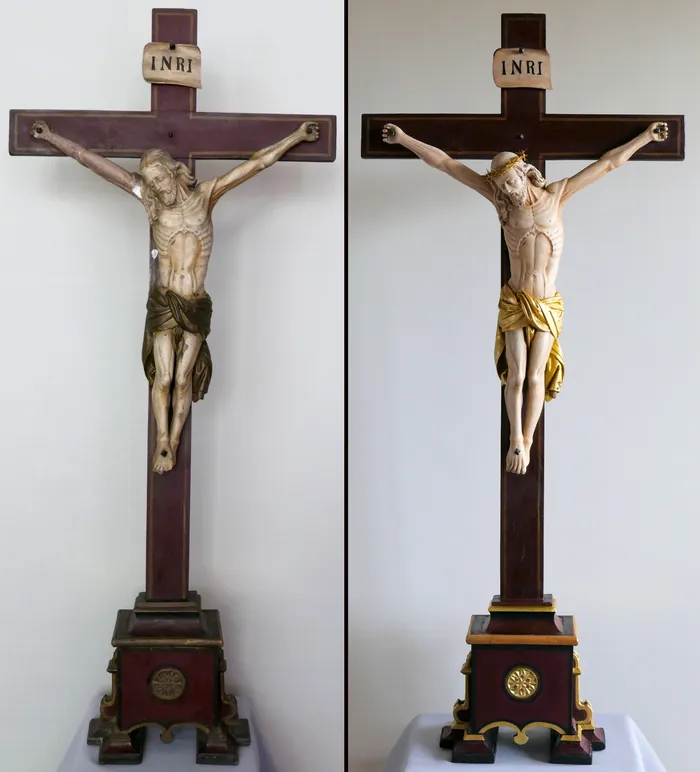
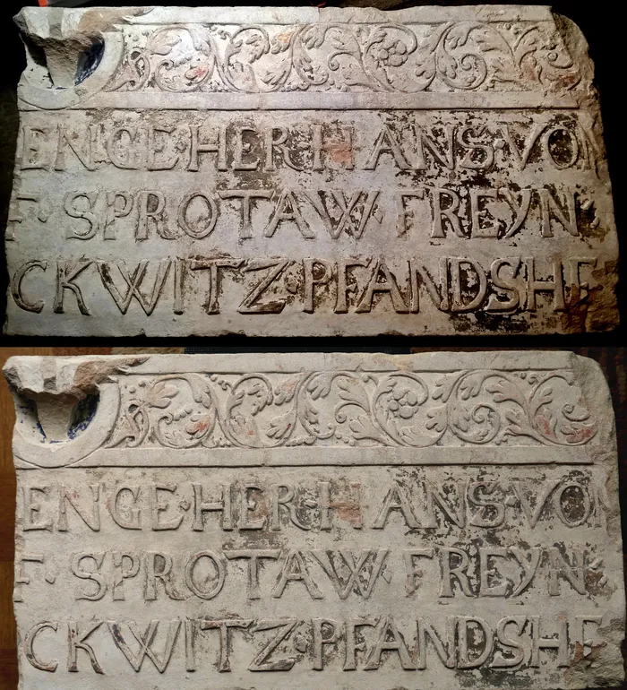
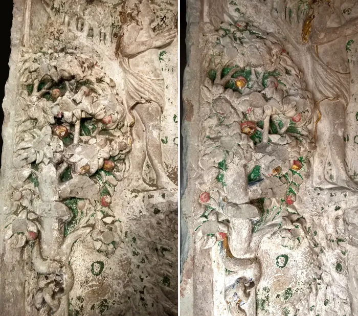
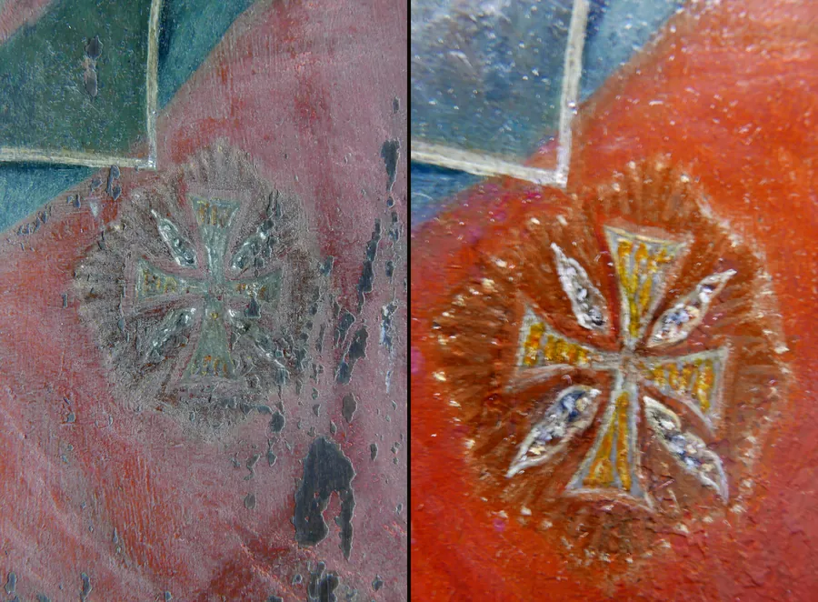
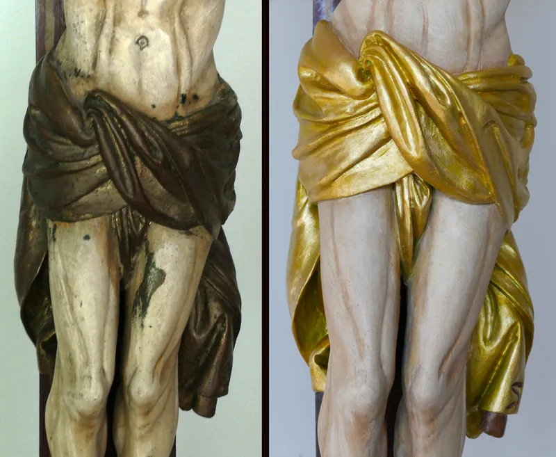
Konserwacja-restauracja malarstwa na różnych podłożach, także na rzeźbie kamiennej i detalach architektonicznych. Konserwacja ceramiki artystycznej i użytkowej, badania technologiczne zabytków. Kopie malarskie, m.in. zabytkowej ceramiki, wykonywane w technologii konserwatorskiej.
Rzeczoznawca Ministra Kultury i Sztuki, a następnie Ministra Kultury i Dziedzictwa Narodowego w latach 1983-2016, w specjalności konserwacja rzeźby kamiennej i detalu architektonicznego oraz ceramiki artystycznej i użytkowej. Rzeczoznawca ZPAP od 1991 r. i SKZ od 2009 r.
Ekspertyzy technologiczno-konserwatorskie i projekty dla zabytków kamiennych, ceglanych i ceramicznych, badania stanu zachowania, wytyczne i programy prac. Nadzory konserwatorskie przy cennych zabytkach architektury sakralnej i świeckiej.
Kamień i alabaster, ceramika i kafle, polichromie i złocenia, blacha miedziana i cynowa, bursztyn, drewno polichromowane - od antycznych amfor po XIX-wieczną majolikę.
Prace z ostatnich lat: od miedzianej Immaculaty z gotyckiego szczytu w Żaganiu po portret arcybiskupa na blasze miedzianej z Gniezna. Każda realizacja na docelowej stronie dostanie własną galerię z etapami prac.

Żagań, kościół WNMP, 2017
Repusowana blacha miedziana, srebrzona i złocona, osadzona na gotyckim szczycie zachodnim.
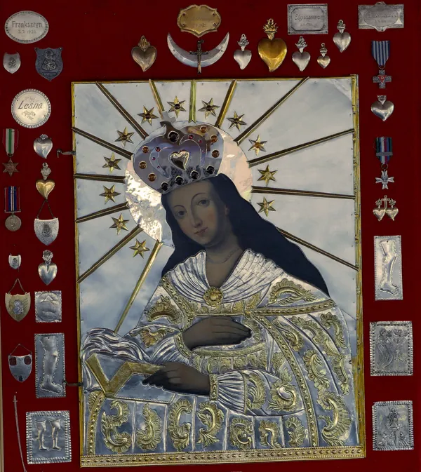
Chełmoń, kościół św. Bartłomieja, 2018
Srebrna, pozłacana sukienka z obrazu Matki Bożej Brzemiennej.
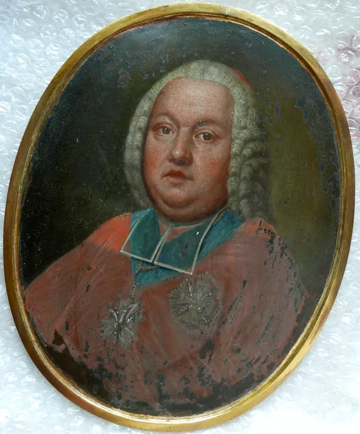
Archikatedra Gnieźnieńska, 2019/20
Olej na blasze miedzianej, lico i odwrocie, po wcześniejszych naprawach.
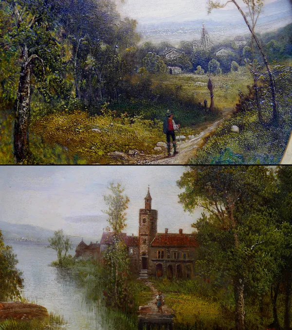
kolekcja prywatna, 2019
Szkliwiona majolika malowana "na zimno", w złoconych ramach-tondach.
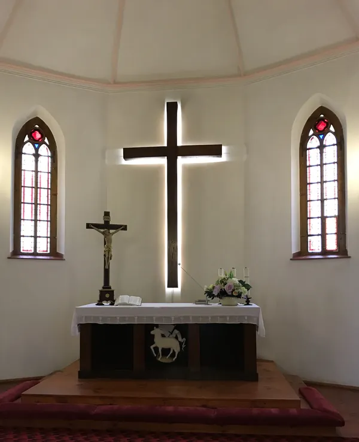
Słupsk, 2019
Neogotycki krucyfiks z polichromią i złoceniami, dziś w ołtarzu głównym.
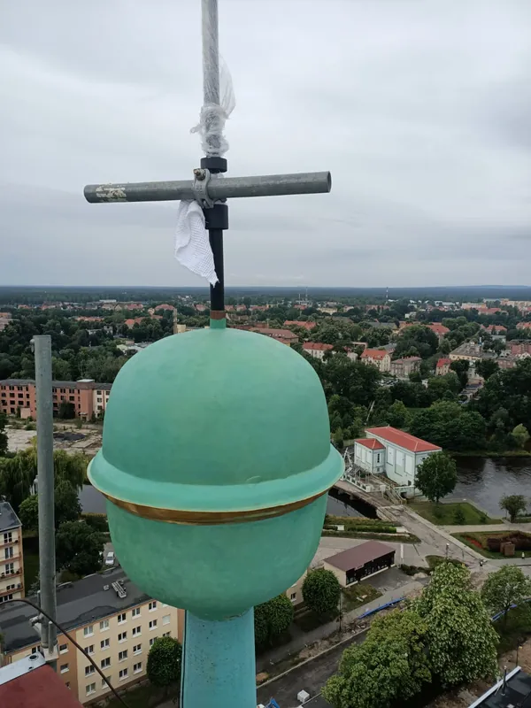
Żagań, kościół WNMP, 2020
Kula zniszczona w czasie wojny, przygotowana do ponownej ekspozycji zewnętrznej.
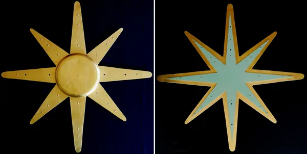
Żagań, kościół WNMP, 2020
Złocenia i imitacja zielonej patyny szlachetnej na miedzianej kopii.
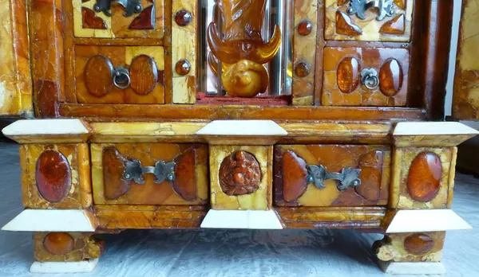
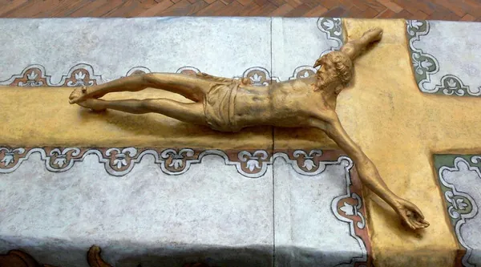
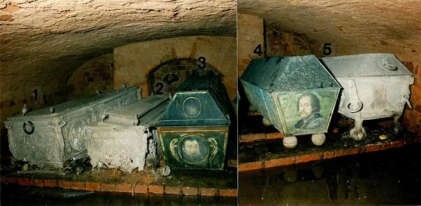
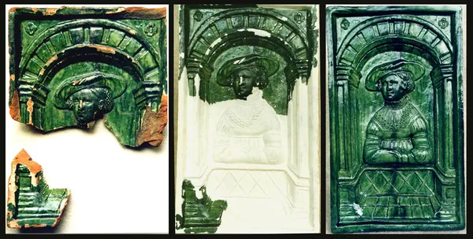
A także m.in. Wielki Piec z Dworu Artusa w Gdańsku (kierownictwo prac i 90 renesansowych kafli, 1985-91), macewy z cmentarza żydowskiego na Powązkach, reliefy Hansa Brandta i epitafia w Katedrze Gnieźnieńskiej, bursztynowy relikwiarz Michela Redlina z Malborka.
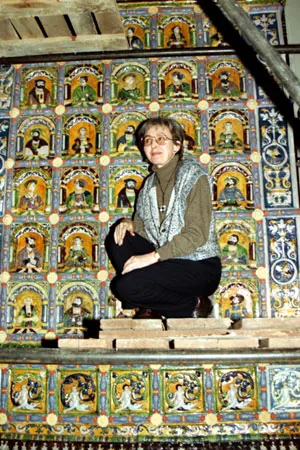
mgr Maria Rudy
konserwator zabytków i dzieł sztuki
„Moja pasja to umiejętne przetwarzanie spraw na pozór trudnych, wymagających wysiłku umysłowego i fizycznego, w zadania o lżejszym zabarwieniu i większej adrenalinie.”Chciejmy chcieć!
Dolnośląski Laur Konserwatorski 2017 za konserwację barokowego sarkofagu z bazyliki w Trzebnicy. Medal Marszałka Województwa Kujawsko-Pomorskiego „Hereditas Saeculorum” 2017. Dyplom Uznania „Pomocna Dłoń Zabytkom”, Słupsk 2018.
Proszę krótko opisać obiekt: czym jest, skąd pochodzi i w jakim jest stanie. Kilka zdjęć z różnych stron bardzo pomaga ocenić zakres prac.
kontakt@mariarudy.pl